Le début de l'histoire
Ma passion pour la pâtisserie trouve ses racines en Normandie. Mon grand-père était déjà un pâtissier accompli, animé par l'amour du travail bien fait et le respect du produit.
Il tenait l'Auberge Normande à Briouze, un lieu chaleureux et convivial où les desserts faits maison occupaient une place essentielle. Les odeurs sucrées, les gestes précis, le soin apporté aux pièces montées et aux grandes occasions faisaient déjà partie du quotidien familial.
C'est dans cet esprit de transmission, d'authenticité et de partage que cette histoire a commencé.
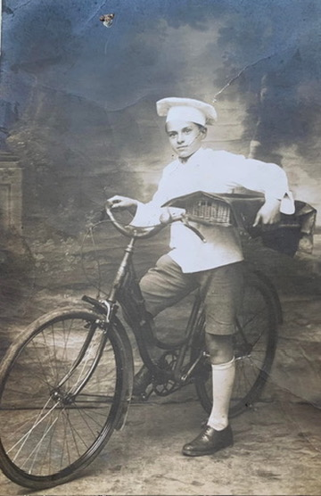
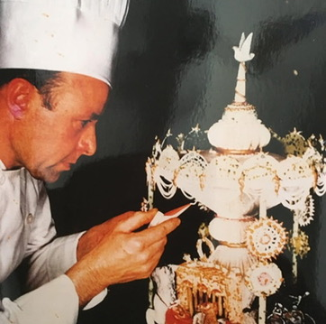
La maison familiale
Mes parents ont écrit un chapitre majeur de cette aventure en tenant, pendant plus de 35 ans, une pâtisserie en Principauté de Monaco.
J'ai grandi dans cette maison, au cœur d'une ambiance naturellement sucrée et chocolatée, où les odeurs, les gestes et les exigences du métier faisaient partie du quotidien.
Mon père, reconnu pour son savoir-faire, a été durant cette période fournisseur officiel du Prince Rainier III et élu Meilleur Pâtissier de l'An 2000 par le Guide Champérard.
C'est durant les quinze années passées à leurs côtés que je me suis formé à ce métier, dans le respect de la précision et de l'excellence.
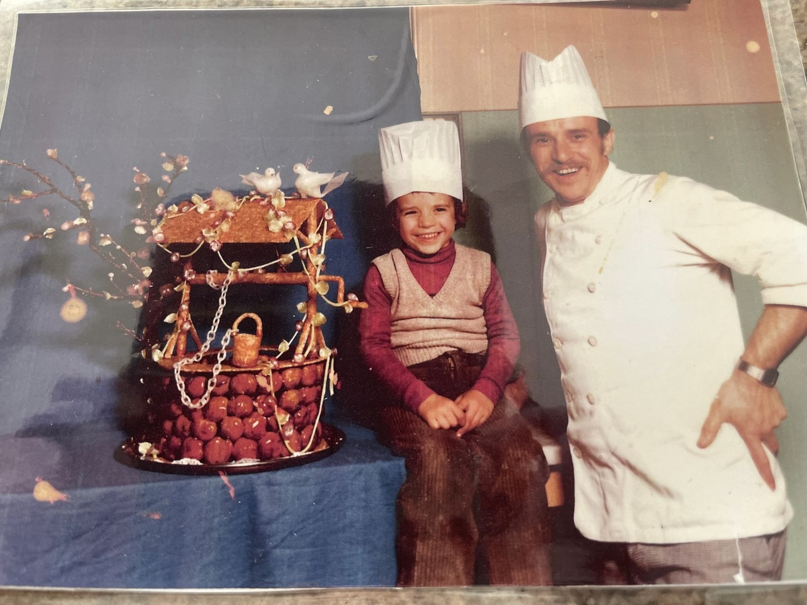
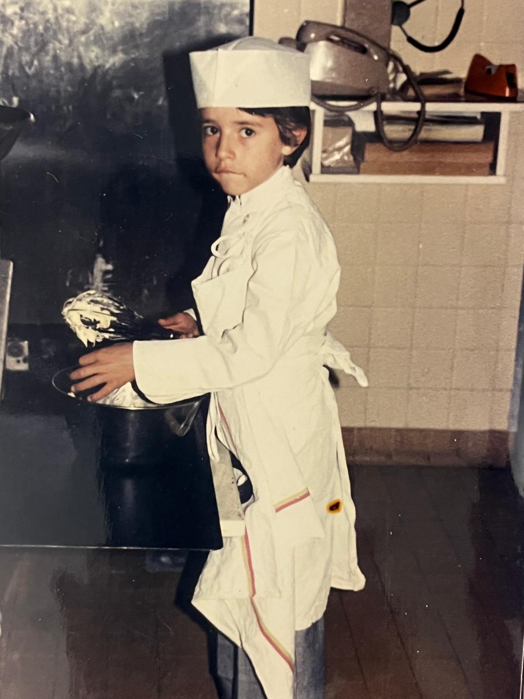
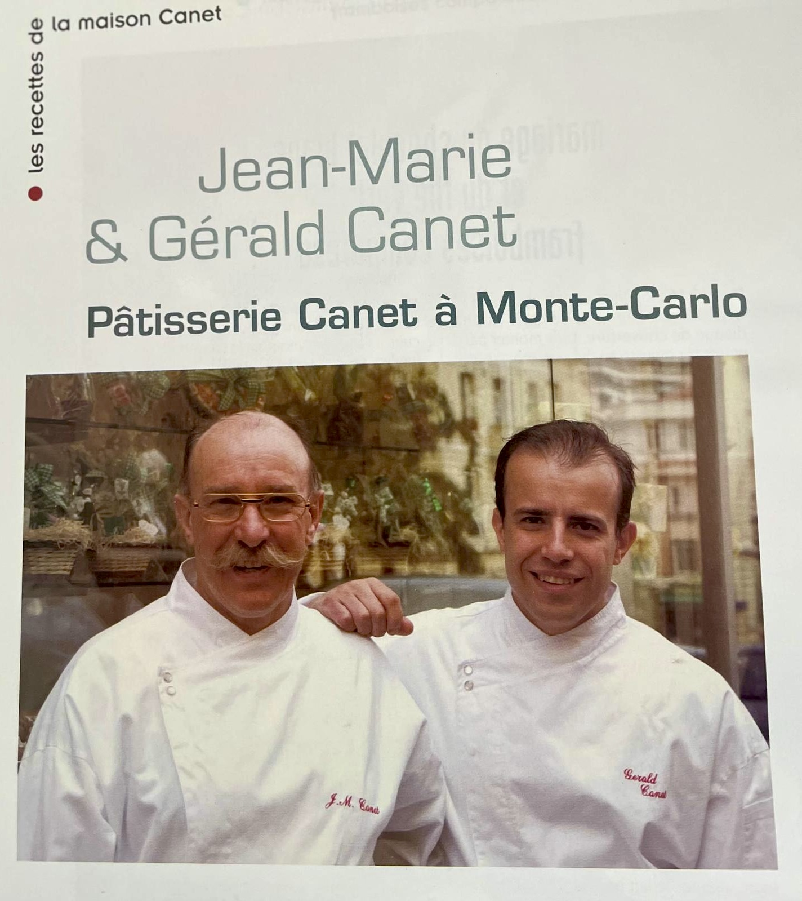
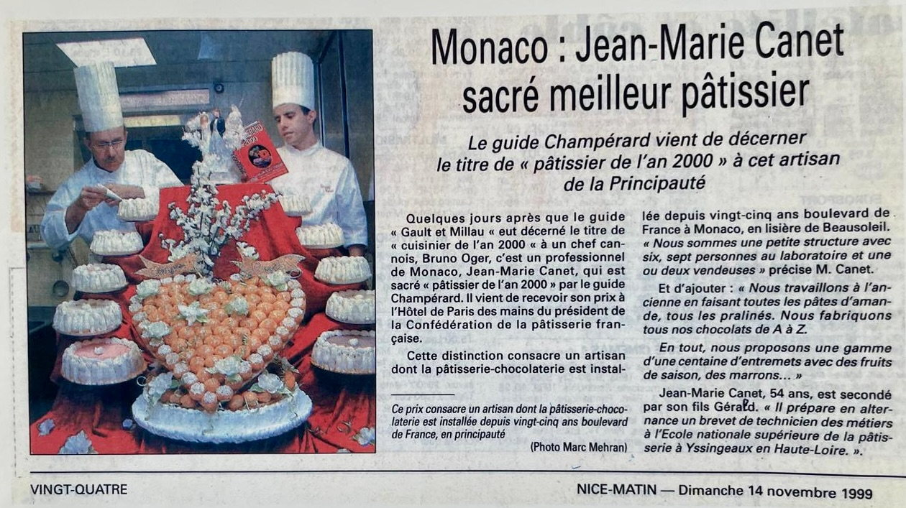
Mon chemin
À Menton, j'ai choisi de tracer mon propre chemin. D'abord aux Halles municipales, puis avec l'ouverture de mon Salon Gourmand, sur l'esplanade des Sablettes.
Une aventure entrepreneuriale exigeante, faite de travail, de remises en question et de passion, durant laquelle mon épouse Claire a toujours été à mes côtés. Son soutien constant, son aide et sa présence, y compris dans les moments les plus difficiles, ont été essentiels à la réussite de ce projet.
Nos jumeaux prenaient plaisir, de temps en temps, à venir donner un petit coup de main à leur papa, dans une ambiance joyeuse et familiale, simplement pour le plaisir de partager ces instants.
Cette période mentonnaise a profondément marqué mon parcours. Elle constitue aujourd'hui le socle sur lequel s'inscrit naturellement la suite de mon histoire.
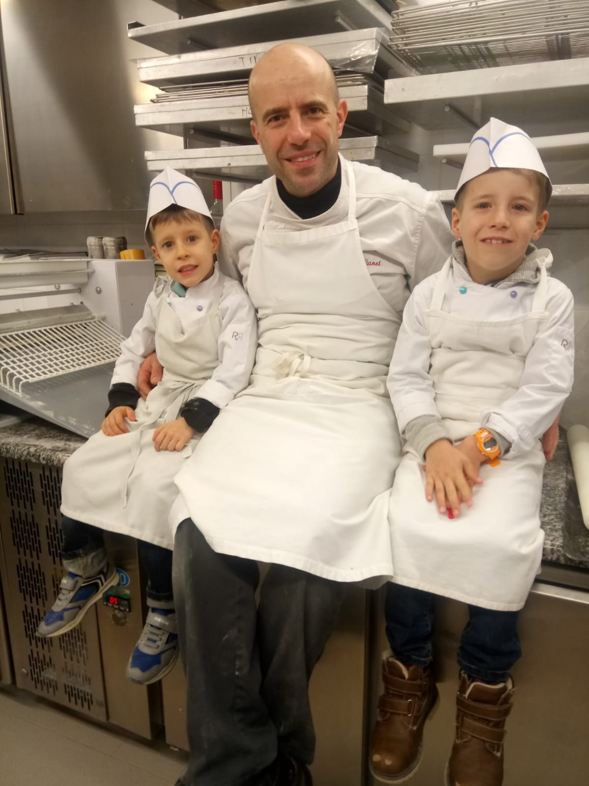
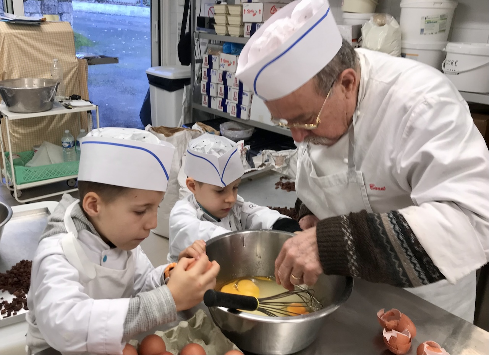
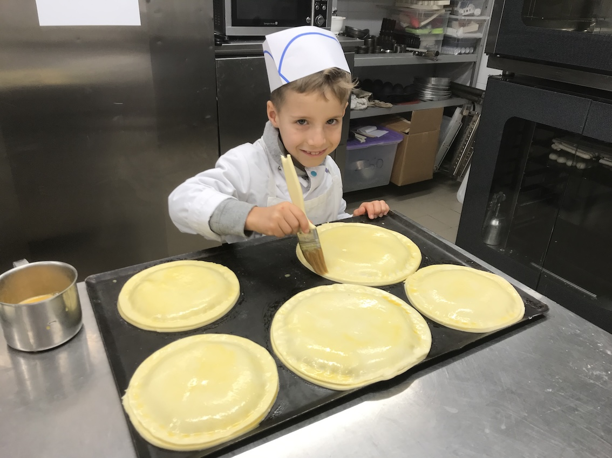
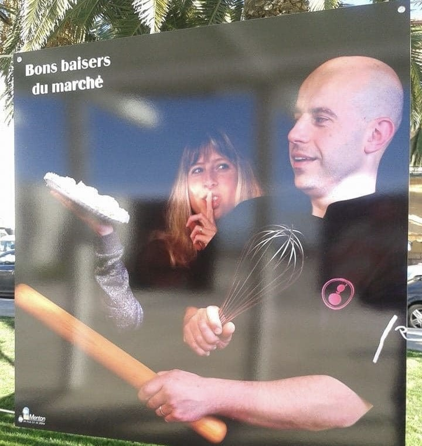
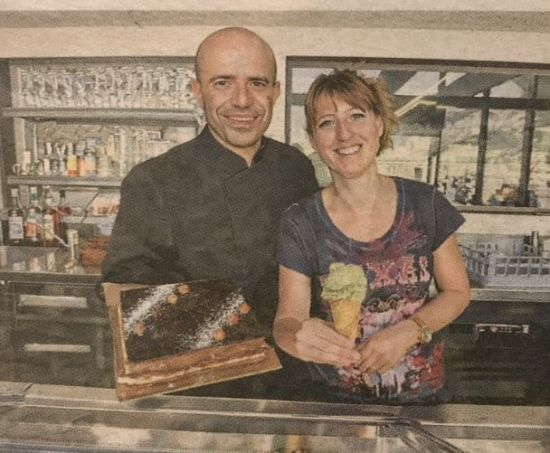
Aujourd'hui
Installé à l'île Maurice depuis plus d'un an, je poursuis cette tradition familiale en proposant une pâtisserie française d'exception, pensée sur mesure.
Mariages, événements privés, entreprises ou hôtels : chaque création est le reflet de ce parcours, entre héritage, exigence artisanale et passion intacte.

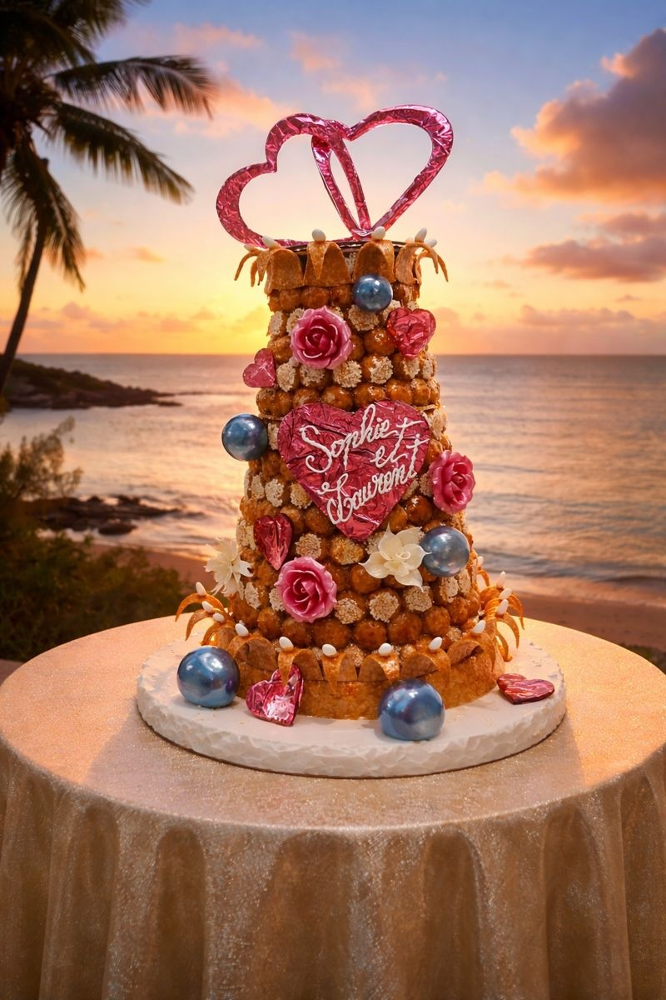
Chaque création est avant tout une rencontre.
Un moment à partager, une histoire à raconter ensemble.